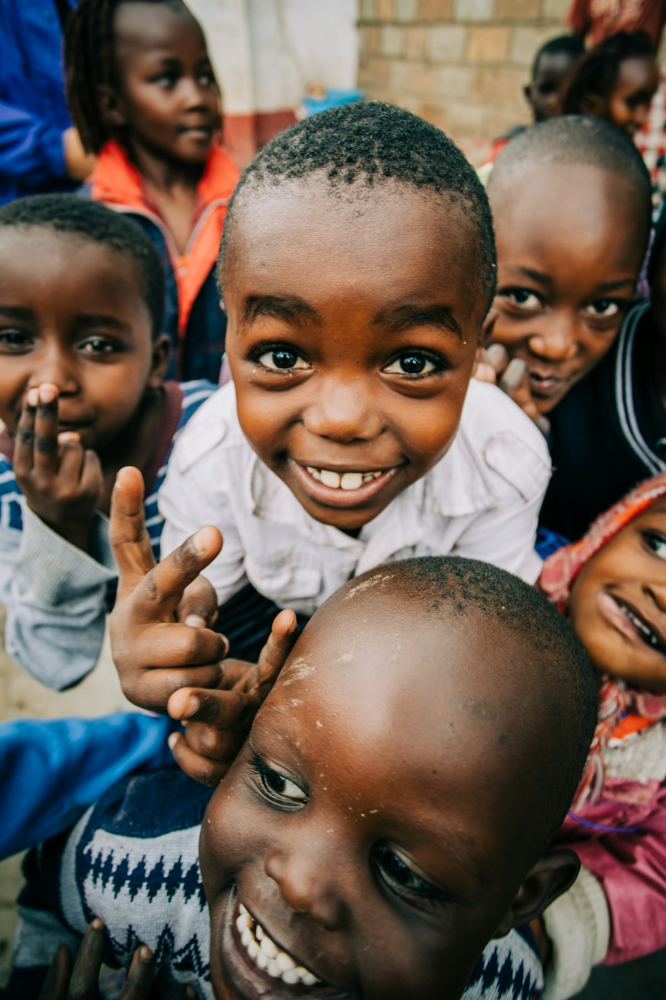
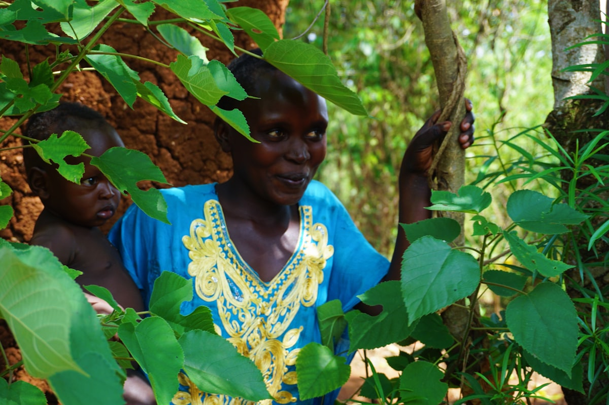

Impact you don't have to take on faith.
We instrument every project so funders can audit the result — real-time dashboards, GPS-tagged trees and AI tracking turn promises into proof.
How we prove every dollar landed
Most NGOs report activity. We report verified outcomes — captured by technology, not estimated in a spreadsheet.
- Real-time dashboards. Live counts of litres, trees, households and systems per county.
- GPS-tagged trees. Every one of 2M+ trees is located and tracked to survival, not just planting.
- AI tracking. Automated monitoring flags issues early and confirms delivery against plan.
- Donor-ready reporting. ESG-grade documentation your board and auditors can rely on.

"Beans to Trees" — proof the model scales
Our flagship livelihood-to-ecosystem program links coffee enterprise with reforestation: income for families, carbon and biodiversity for the planet, and a clean, measurable story for corporate ESG partners.
30,000+ coffee plants and 2M+ trees later, "Beans to Trees" demonstrates that SkyVast's approach is not a one-off — it's a repeatable, reportable template ready for corporate co-funding.
Reaching the driest, highest-need counties
We concentrate where water stress is most severe and a dollar does the most good.
One number, one family at a time
A single household tank means a year of clean water and a green shamba — multiplied across 3,000+ families.
A village water pan plus reforestation reshapes an entire community's dry season — verified on the dashboard.
A county dam secures water for generations — the largest scale of resilience we engineer.
Fund a project and we'll show you the receipts.
GPS coordinates, litre counts, tree survival, household reach — the proof arrives with the impact.